|
|
| plants text index | photo index |
| mangroves |
| Api-api Avicennia sp. Family Avicenniaceae updated Jan 2013 Where seen? Some Api-api species are among the most commonly seen species in our mangroves. A few species, hoever, are rarely seen on our shores. According to Corners, there are 16 species seen in tropical and subtropical shores. There are 5 species in Malaya on muddy coasts and estuaries or sheltered bays, sometimes standing out to sea. But according to Tomlison, there are 8 species found in tropical shores from the intertidal to back mangroves. Features: Tree up to 30m tall, those on our shores shorter, about 10-25m. Leaves simple, oval to pointed (8-12cm long), arranged opposite one another. The leaves have glands to secrete salt. The tree has pencil-like pneumatophores that stick up above the ground from underground cable roots that are long, shallow and spread out from the trunk. Generally alternating with the pneumatophores are anchoring roots that emerge from the cable roots and grow downwards. Anchoring roots may be as long as the pneumatophores are tall. Finer absorbing roots also emerge from anchoring roots. Flowers small yellow in clusters, the inflorescence forms a cross-shape. Flowers are believed to be pollinated by bees which collect the nectar that is produced in "some quantity" according to Tomlinson. Fruits small (1-2cm long), different shapes depending on the species. The fruit is semi-viviparous, the seedling developing on the parent tree, but not emerging until it has dropped off. According to Tomlinson, "the embryo germinates promptly upon release". The fruit contains one large seed, with one large green seed-leaf folded around the other. Avicennia is named after Ibn Sina (980-1037 AD), a Persian physician-philosopher who gained fame by curing, at the tender age of 17, the King of Bukhhara of an ailment that other physicians were unable to treat. As a reward, he asked only for permission to use the King's library. Ibn Sina went on to write an immense encyclopaedia of the medical knowledge of his time, which remained in use for the next six centuries. The encyclopaedia included his own insights into the causes and spread of diseases and their treatment including tuberculosis, meningitis (he was the first to describe it), gynaecological and diseases of childhood. He also wrote an encyclopaedia of other scientific and philosophical knowledge covering physics, mathematics, economics and politics. In this, he also added his own insights into among others, the laws of physics, astronomical measurements and mathematical verifications. Human uses: According to Burkill, the tree provides an "indifferent firewood" and the timber often too twisted to be of use. However, he reported it was widely used to smoke fish as it gave "an agreeable flavour" and also for smoking rubber. The 'seeds' are also eaten in various ways by various coastal natives with much treatment such as boiling then soaking or sun drying or roasting in order to make them more palatable. The leaves are fed to cattle in the Red Sea, Persian Gulf and India as well as Australia. Medical uses include the resin for toothache, as a contraceptive, an aphrodisiac. The ash from burnt wood is used to make soap as there is a large amount of alkali in it. Status and threats: Avicennia marina is listed as 'Critically Endangered' in the Red List of threatened plants of Singapore. |
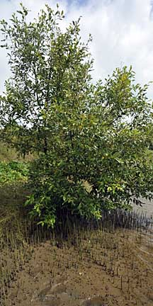 Pulau Semakau, Jan 09 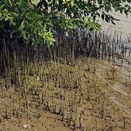 Pencil roots. 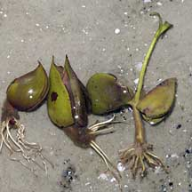 Germinating Avicennia seedlings. Chek Jawa, Nov 03 |
|
Api-api
putih
Avicennia alba |
||
|
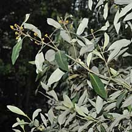 Leaves very white underneath. |
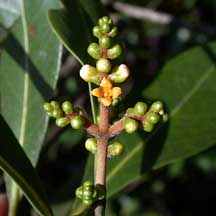 Small flowers, not so crowded. |
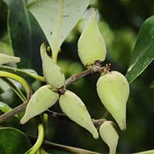 Fruits with long pointed tips smooth. |
|
Api-api
jambu
Avicennia marina |
||
|
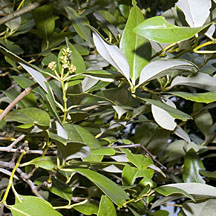 Leaves not so white underneath. |
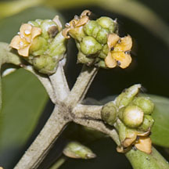 Large flowers, crowded together. Flower stalk squarish to leaf-bearing portions. |
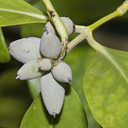 Fruits oval smooth. Bluish never yellowish. |
|
Api-api
bulu
Avicennia rumphiana |
||
|
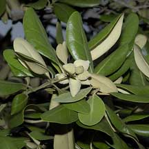 Leaves underneath white and velvety. |
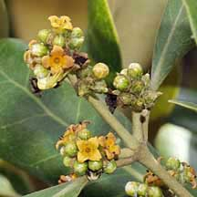 Large flowers, crowded together. Flower stalk squarish NOT to leaf-bearing portions. |
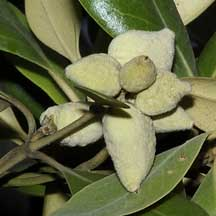 Fruits oval usually wrinkly. |
|
Api-api
ludat
Avicennia officinalis |
||
|
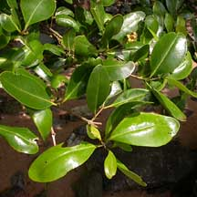 Leaves glossy and smooth. |
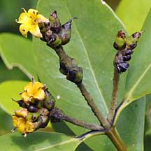 Large flowers, crowded together. |
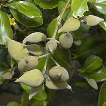 Fruits oval with pointed tip smooth. |
|
Links
References
|
|
|